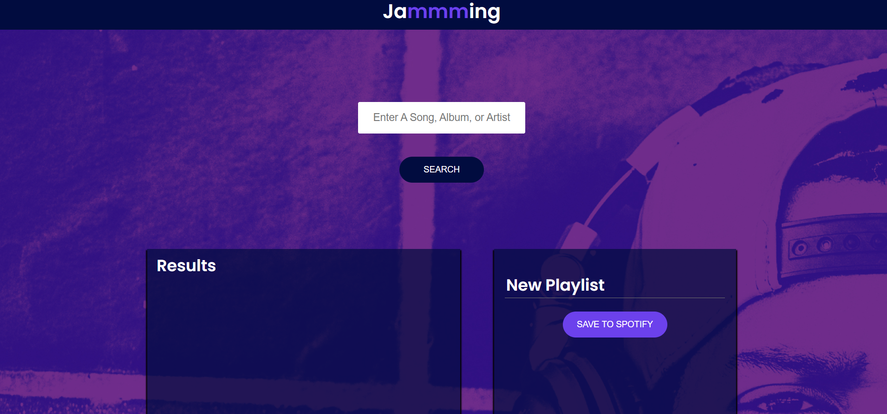
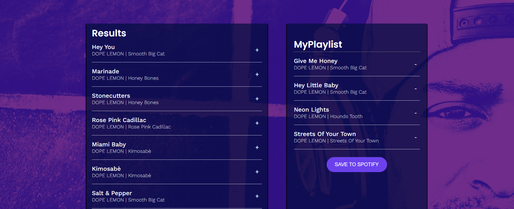

API requests Project
In this project I created a simple user interface with a search bar and two boxes, the one on the left to handle the search results and the one on the right to create a new playlist on spotify. API requests to GET and POST are sent to the Spotify API to fetch songs and create a new user playlist, customized with their chosen name and songs, on their own Spotify account.
In the home page we have a search bar where the user types a song, a playlist or an artist of their choice, after the search button is pressed Spotify will ask permission to proceed. The following is that a list of songs will be displayed in the Results box on the left with the icon '+'. Once the icon is hit, the song will be created on the playlist box on the right. The icon then will be switched to '-' and it is to be pressed if the user wishes to remove it from their new playlist.
The user can set the name of the playlist he wishes to add to their Spotify account and pressing the 'Save to Spotify' button all the songs selected by him will be saved to his Spotify account in his newly created Playlist.
The requests
There is an object called Spotify in the Spotify.js util file that contains three methods that are in charge of the requests and access token information: .getAccessToken(), .search(), .savePlaylist(). When the button 'Search' is clicked, Spotify.getTockenAccess (which contains the code to get the access token) will be called and a request authorization to access data will be sent to the API. Then the Spotify accounts service will display scopes and prompt user to login. After the user login and the authorization is granted the application will request access and refresh tokens which will be used by the application.
The Spotify.search() method takes a term as argument and calls Spotify.getAccessToken() immediately and performs a GET request retreiving the track id, name, uri, artist and album. And the Spotify.savePlaylist() method takes two arguments, the first is the name of the playlist and the second is the tracks uris. If there is no name or tracksUris then it wont return anything, otherwise it will perform a POST request to the API.
The components
The App parent component is responsible for passing props and rendering all children components. Methods for adding tracks, tracks removal, update playlist name, save playlist and searching are part of its component and passed down as props.
The SearchBar component has two elements: an input and a button. The input element has a placeholder to provide the user with a guide of what type of term it is expecting and a onChange event that calls the handleChange() which updates the term state according to the user's input. The butten element has an onClick event that triggers the search() method on the click.
The Track component uses the addtTrack() and remove Track() methods to add or remove tracks from the Playlist box. This functionality could be implemented with a function renderAction, which adds a track when clicking on the '+' icon or removes a track when clicking on the '-' icon. The component gets the track name, artist and album from the response passed down as props.
The TrackList component maps over each track in the response and get its name, album and artist, also creating a key for each one of them. It relies renders or remove each track in the search results box.
The SearchResults component uses the Tracklist to display its tracks and tells Tracklist to set the tracks icon to '+' in order to add the track to the Playlist component if clicked.
The Playlist component has an input element used for inserting the chosen playlist name and updates the name change. It also uses the Tracklist to display added tracks and tells Tracklist to set the tracks icon to '-' in order to remove it from Playlist if clicked. Lastly it has a 'SAVE TO SPOTIFY' button that calls the .saveToPlaylist() method in the Playlist component, passed down as props from App, that maps through each track in Playlist tracks and get its uri. Then it perfoms a POST request to create a new customized playlist on the users Spotify account.